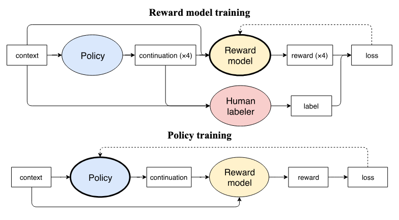

RLHF (Reinforcement Learning from Human Feedback) 基于人类反馈的强化学习。
利用人类偏好训练 reward model，并结合 PPO 进一步优化语言模型，从而让模型生成更符合人类偏好的内容。
方法
符号与任务空间
论文先用一组符号描述语言模型和它要完成的任务。这里的 Σ 是希腊字母大写 Sigma，表示词汇表，不是求和运算。
| 符号 | 含义 |
|---|---|
| Σ | 词汇表，即模型可以使用的全部词元集合 |
| ρ（rho） | 语言模型 |
| Σn | 由词汇表中的词元组成、长度恰好为 n 的所有词元序列 |
语言模型 ρ 在词元序列 Σn 上定义概率分布。一条完整序列的概率，等于模型依次生成每个词元时的条件概率之积：
例如，模型生成第三个词元时，会参考前两个词元；生成第四个词元时，会参考前三个词元。把每一步的概率乘起来，就得到整段词元序列的概率。
- 输入空间 X = Σ≤m 表示输入 x 最多包含 m 个词元。
- 数据分布 𝒟 over X 表示训练时的输入 x 来自输入空间 X 上的数据分布 𝒟。
- 输出空间 Y = Σn 表示输出 y 是长度为 n 的词元序列。

查看原图第一步：收集人类偏好
对每个上下文，原始模型生成四个候选。标注者选出其中最好的一段，系统保存上下文、四个候选和选择结果。这里没有预先写好的标准答案，也没有要求标注者解释原因。
因此，得到的数据集 S 由 (x, y₀, y₁, y₂, y₃, b) 这样的样本组成：x 是输入，y₀ 到 y₃ 是四个候选输出，b 是标注者选择的候选序号。例如选择第三个候选 y₂ 时，b = 2。
第二步：训练奖励模型
奖励模型会分别给四个候选打分。假设人类选择了候选 2，模型给出的分数是：
候选 0： 0.8
候选 1：-0.1
候选 2： 2.4 ← 人类选中
候选 3： 0.2这些分数先经过 softmax，变成“每个候选会被人类选中”的概率。上面的候选 2 大约得到 72% 的概率。训练的目标很直观：让人类选中的候选获得最大的概率。
r(x, yb) 表示奖励模型给人类选中的候选回答 yb 打出的分数；
r(x, yi) 表示奖励模型给第 i 个候选回答 yi 打出的分数，分母会把四个候选的分数全部纳入比较。
这条公式具体在做什么？
1. r(x, yᵢ)：奖励模型给第 i 个候选的分数。
2. exp + 求和：把四个分数转换成总和为 1 的概率。
3. 只取人类选中的 y_b 所对应的概率。
4. 加上 -log：如果选中项概率很低，损失很大；概率接近 1，损失接近 0。
因此，反复降低这个损失，就会让奖励模型越来越像人类标注者。第三步：用 PPO 让语言模型追求高奖励
奖励模型训练好后，当前策略 π 生成新文本，奖励模型给它打分，PPO 再根据分数更新 π。但只追求高分有一个危险：语言模型可能钻奖励模型的空子，生成奇怪却能拿高分的文本。
作者因此没有直接使用奖励模型的分数，而是减去一项 KL 惩罚：
可以把 KL 约束理解成一根安全绳：如果新模型生成某段文本的倾向与原始 GPT-2 相差很大，就要扣分。β 越大，安全绳越紧；β 越小，模型越敢追逐奖励。
第四步：让反馈数据跟上正在变化的模型
如果奖励模型只见过原始 GPT-2 的输出，随着策略不断更新，它迟早会遇到训练时没见过的文本。这时奖励模型的分数可能不可靠，策略却会继续放大这些错误。
当前策略生成候选
不再只使用原始 GPT-2，而是让正在训练的模型提供新样本。
人类继续四选一
标注者比较模型当前真正会生成的文本，把新偏好加入数据集。
重新训练奖励模型
更新评分标准后继续 PPO，减少策略与奖励模型之间的分布偏移。
论文把只收集一次数据称为 offline，把上面的循环称为 online。实验共进行了 2M 个 PPO episodes；在线设置还周期性重训奖励模型，连同初始版本一共训练 20 次。
实验
作者围绕四个任务提问：少量人类选择能否改变模型风格？学到的奖励能否支持摘要生成？在线反馈是否真的有必要？
| 任务 | 偏好数据 | 代表性结果 | 说明 |
|---|---|---|---|
| 正面情感续写 | 5,000 次四选一比较 | 相对 zero-shot GPT-2，人类有 88% 的时候更喜欢微调结果 | 少量反馈足以改变明确的风格属性 |
| 生动描写续写 | 5,000 次四选一比较 | 相对 zero-shot GPT-2，偏好率为 86% | 方法也能学习没有现成分类器的主观属性 |
| Reddit TL;DR 摘要 | 最多 60,000 次比较 | 60k online 模型相对 offline 模型的偏好率为 64% | 模型变化后，继续收集新反馈很重要 |
| CNN/Daily Mail 摘要 | 最多 60,000 次比较 | 60k online 模型相对 offline 模型的偏好率为 65% | 同样受益于在线数据，但学会了大量复制原文 |
风格任务：5,000 次选择已经很有效
在风格任务中，模型先读 BookCorpus 的 32–64 个 token，再续写 24 个 token。仅用 5,000 次人类比较，正面情感和生动描写就获得了明显偏好。继续增加到 20,000 次或改用在线收集，并没有带来稳定优势。
论文还用一个情感分类器模拟已知奖励，再把从比较数据学到的奖励与它对照。结果说明，大约 20k–60k 次偏好查询可以较好地逼近直接使用分类器奖励的训练，不过在 2M 次续写后仍存在差距。
摘要任务：表面胜利掩盖了“聪明复制”
摘要结果一眼看上去非常强：60k online 模型相对 zero-shot GPT-2 的偏好率，在 TL;DR 上达到 96%，在 CNN/Daily Mail 上达到 91%；甚至相对数据集里的参考摘要也分别达到 96% 和 84%。
但另一个基线暴露了问题：简单截取文章前三句的 lead-3，同样大幅胜过参考摘要，而且还能胜过 RL 模型。作者进一步发现，RL 模型在 TL;DR 中有 71% 的句子直接复制自输入，在 CNN/Daily Mail 中这一比例达到 98%。它学到的不是理想的摘要方式，而是一个容易获得“准确、少遗漏”偏好的捷径。
这不代表人类反馈没有作用。作者人工检查后认为，纯 RL 模型生成的摘要大多准确；问题在于标注规范要求惩罚错误和重复，却没有惩罚复制。模型非常忠实地优化了被标注者奖励的属性，只是这个属性集合并不完整。
挑战
- 偏好不是客观真值：作者之间对四选一任务的平均一致率约为 60%，明显高于随机选择的 25%，但离完全一致仍很远；作者与外部标注者的一致率在情感任务上为 38%，在 TL;DR 上为 46%。
- 在线训练昂贵而复杂：当前策略生成数据、人工标注、重训奖励模型和继续 PPO 形成了长反馈链，任何环节都可能延迟下一轮实验。
- 奖励模型会遇到分布偏移：摘要任务里 online 明显胜过 offline，说明固定奖励模型无法一直可靠评价不断变化的策略。
- 实现错误会被模型放大：一次代码重构同时翻转了奖励和 KL 项的符号，模型没有变成随机乱码，而是学会生成流畅但与目标完全相反的内容。这说明训练曲线正常并不等于目标写对了。
读到这里，这篇论文的意义就比较清楚了：人类比较确实能为难以形式化的语言任务提供训练信号；但从“人类在几个候选里选了它”到“它真正符合我们的意图”，中间仍隔着标注设计、数据分布和奖励投机三道关。